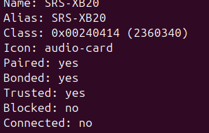

Sony kõlar oli seotud, kuid ühendus ebaõnnestus
Ubuntu oli Sony SRS-XB20 juba paaritanud. Kontrolliks kasutati bluetoothctl-is käske connect <kõlari aadress> ja info <kõlari aadress>. Kõlari tuli vilkus. Kolm katset lõppesid teatega br-connection-unknown.
TP-Link UB500 kaudu tehtud eraldi A2DP-ühenduse katse aegus. Inteli adapteriga õnnestus kõlar paaritada, kuid ühendus katkes. Katsete põhjal jäi lahtiseks, kuidas hoida korraga töös nii kõlar kui ka R-GO klaviatuur.
